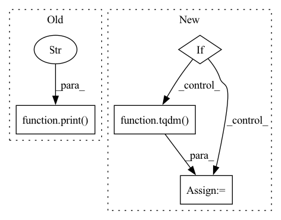

Pattern ID :23153
Before Change
tqdm.pandas()
// astred and cross
print("ADDING CROSS AND ASTRED" )
partial_func = partial(process_astred_cross, method)
// dirty looking way of fast processing
// as taken from https://stackoverflow.com/a/60056244/1150683After Change
gpu_partial_process = partial(process_astred_cross, use_gpu=not args.no_cuda)
if args.j > 1:
splits = np.array_split(df, args.splits)
partial_func = partial(mapable_df_process, gpu_partial_process)
with Pool(processes=cargs.j) as pool:
row_list = pd.concat(tqdm( pool.imap(partial_func, splits),
total=args.splits,
unit="split") )
else:
tqdm.pandas(unit="row")
row_list = df.progress_apply(gpu_partial_process, axis=1)In pattern: SUPERPATTERN
Frequency: 3
Non-data size: 4
Instances Fragment ID: 73116403
Project Name: bramvanroy/astred
Commit Name: 8893b5c8514d739d55727a28ec1c1cb2ddcf033a
Time: 2020-03-02
Author: Bram.Vanroy@UGent.be
File Name: add_info_to_df.py
M Class Name: AnonimousClass
N Class Name: AnonimousClass
M Method Name: main(1)
N Method Name: main(3)
M Parent Class:
N Parent Class:
M File Name: add_info_to_df.py
N File Name: add_info_to_df.py
M Start Line: 51
M End Line: 75
N Start Line: 71
N End Line: 95
Before Change
def get_papers(self,update_dois=False,idx_start=0,idx_finish=-1):
for idx,_ in self.data.iterrows():
self.add_paper(idx_in_data=idx)
print("Objs problem exported in objectives_pbs.txt" ) After Change
@update_naimai_dois
def get_papers(self,update_dois=False,idx_start=0,idx_finish=-1,show_tqdm=False):
if show_tqdm:
range_ = tqdm( self.data.iterrows(),total=len(self.data))
else:
range_= self.data.iterrows()
for idx,_ in range_:
self.add_paper(idx_in_data=idx) Fragment ID: 73116406
Project Name: yassinekdi/naimai
Commit Name: adc59b584c90f996696d277a864a7c9d0d43cb3e
Time: 2022-04-23
Author: keptsa@yahoo.fr
File Name: papers/only_abstracts/issn.py
M Class Name: papers_issn
N Class Name: papers_issn
M Method Name: get_papers(5)
N Method Name: get_papers(4)
M Parent Class: papers
N Parent Class: papers
M File Name: papers/only_abstracts/issn.py
N File Name: papers/only_abstracts/issn.py
M Start Line: 74
M End Line: 76
N Start Line: 73
N End Line: 78
Before Change
for i, batch in enumerate(train_loader):
print(f"Batch: {i}/{len(train_loader)} epoch {epoch}" )
img = batch.cuda()
if hp.resize:
img = face_pool(img)After Change
model.train()
if get_rank() == 0:
progress_bar = tqdm(total = args.epochs, desc = "Total progress", dynamic_ncols=True)
progress_bar.update(epochs)
interior_step_bar = tqdm(dynamic_ncols=True)
for epoch in range(1, epochs + 1): Fragment ID: 73116405
Project Name: montaellis/framework-of-gan-inversion
Commit Name: e395662415889bea6fbc80cfc80d1fbff249835e
Time: 2021-10-19
Author: elliszkn@163.com
File Name: train_ddp.py
M Class Name: AnonimousClass
N Class Name: AnonimousClass
M Method Name: train(0)
N Method Name: train(0)
M Parent Class:
N Parent Class:
M File Name: train_ddp.py
N File Name: train_ddp.py
M Start Line: 208
M End Line: 265
N Start Line: 99
N End Line: 291